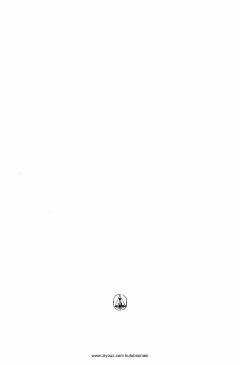

TTAmir Temurning davlat boshqaruvi va hayotiy qoidalari jamlangan tarixiy asar.
Ushbu asar Amir Temurning davlat boshqaruvi, harbiy strategiya va hayotiy falsafasini o'zida mujassam etgan tarixiy hujjatdir. Kitob Alixon Sog'uniy va Habibulla Karomatov tomonidan fors tilidan o'zbek tiliga tarjima qilingan.